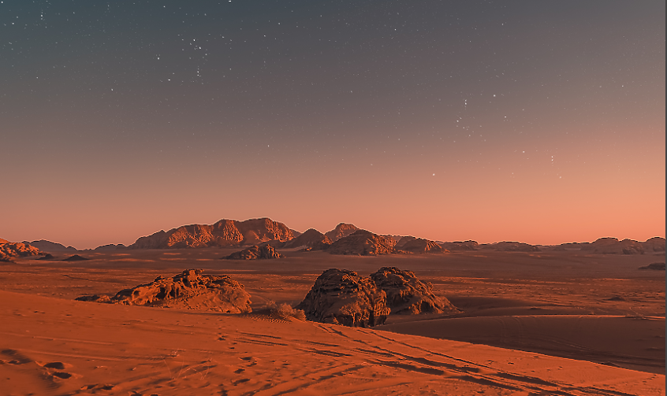
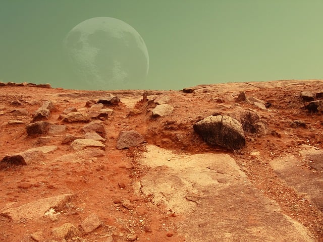
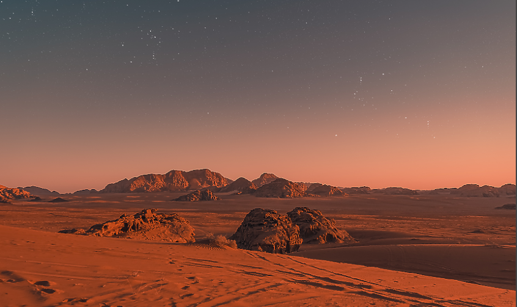
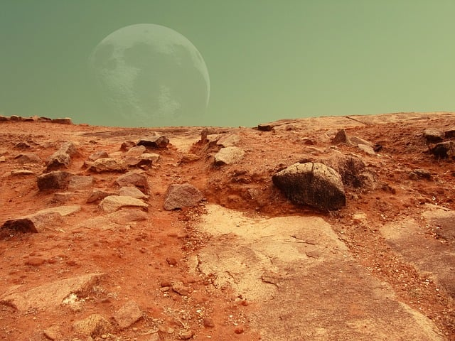

Марс е известна още като "Червената планета" заради червения си цвят, който е резултат от големите количества железен оксид (ръжда) на повърхността ѝ. Това придава на планетата характерния червен оттенък, който може да бъде забелязан дори с невъоръжено око от Земята.
Въпреки че повърхността на Марс изглежда суха и безжизнена, изследвания показват, че под нея се крият обширни залежи от воден лед. Това откритие увеличава възможността за съществуването на живот в миналото и поддържа надеждите за бъдещи човешки мисии, които могат да използват този лед като ресурс.

Марс е дом на най-високият вулкан в Слънчевата система - Олимп Монс. Вулканът е висок около 22 км, което е почти три пъти по-висок от Еверест.
Подобно на Земята, Марс също има сезони, поради наклона на неговата ос. Въпреки това, тъй като една година на Марс трае почти два пъти по-дълго от земната, сезоните също са съответно по-дълги.
Марс има две малки луни, Фобос и Деймос. Смята се, че те са уловени астероиди от астероидния пояс между Марс и Юпитер. Фобос постепенно се приближава към Марс и се очаква един ден да се сблъска с планетата или да бъде разкъсан от гравитационните сили, образувайки пръстен около Марс.
 


